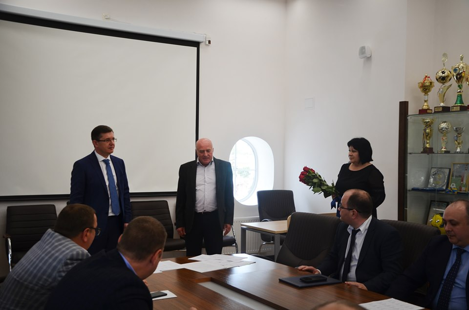

<div class="section section__subpage subpage__news">
    <div class="content">
        <header>
            <ul class="header__menu part1">
                <li class="menu__item"><a class="menu__item__link" href="#"><span class="menu__item__text">
                            Громадянам</span> <i class="icon icon_arrow_sm_bl"></i></a>
                </li>
                <li class="menu__item"><a class="menu__item__link" href="#"><span class="menu__item__text">
                            Судово-адміністративні послуги</span> <i class="icon icon_arrow_sm_bl"></i></a></li>
                <li class="menu__item"><a class="menu__item__link" href="#"><span class="menu__item__text"> Діяльність
                            суду</span> <i class="icon icon_arrow_sm_bl"></i></a>
                </li>
                <li class="menu__item"><a class="menu__item__link" href="#"><span class="menu__item__text">
                            Прес-служба</span> <i class="icon icon_arrow_sm_bl"></i></a></li>
                <li class="menu__item last"><a class="menu__item__link" href="#"><i class="icon icon_ehcd"></i><span
                            class="menu__item__text">
                            ЄСПЛ</span></a></li>
            </ul>
        </header>

        <ul class="subpage__bread__crumps">
            <li class="bread__crumps__next__item"><a class="bread__crumps__next__item__link" href="/index.html">Головна</a>
                <i class="icon icon_arrow_bl"></i></li>
            <li class="bread__crumps__next__item"><a class="bread__crumps__next__item__link" href="#">Про суд</a>
                <i class="icon icon_arrow_bl"></i></li>
            <li class="bread__crumps__next__item"><a class="bread__crumps__next__item__link" href="#">Історія
                    суду</a></i>
            </li>
        </ul>


        <div class="subpage__title__section">
            <h1><span>Вінниця.ok: У 7ААС Дмитра Совгиру обрали заступником голови суду</span></h1>
            <div class="title_line"></div>
            <div class="title_date">
                14.05.2019
            </div>
        </div>

        <div class="subpage__article__text">
            
            <p>Сьогодні, 14 травня, у Вінниці в Сьомому апеляційному адміністративному суді на зборах суддів двадцятьма
                голосами обрали Дмитра Совгиру заступником голови суду.
            </p>
            <p>
                Одноголосність рішення свідчить про високий аванс довіри до новообраного заступника, який він обіцяв
                обов’язково виправдати. Колеги привітали нового заступника голови суду і побажали йому наснаги на
                адміністративній посаді.
            </p>
            <p>
                Довідка. Совгира Дмитро Іванович отримав вищу юридичну освіту у Харківському юридичному інституті ім.
                Дзержинського (1978-1982). Свою трудову діяльність розпочав стажером старшого слідчого
                Могилів-Подільської прокуратури. Пізніше обіймав посади старшого слідчого, заступника прокурора та
                старшого помічника Могилів-Подільського міжрайонного прокурора. З 2002 року був суддею
                Могилів-Подільського міського суду у Вінницькій області (з 2004 року Могилів-Подільського міськрайонного
                суду). У 2011 році продовжив свою суддівську діяльність у Вінницькому апеляційному адміністративному
                суді. Із вересня 2018 року Дмитро Совгира працює на посаді судді Сьомого апеляційного адміністративного
                суду.
            </p>


        </div>
    </div>

</div>